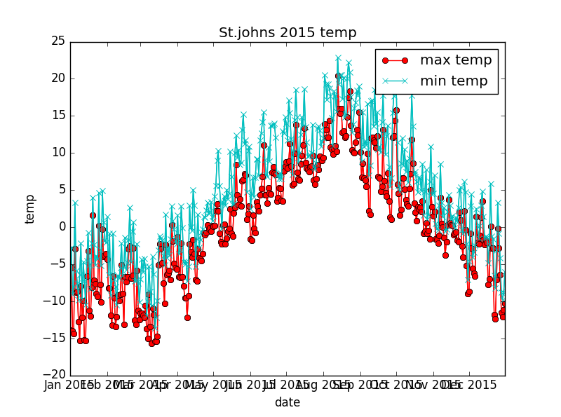
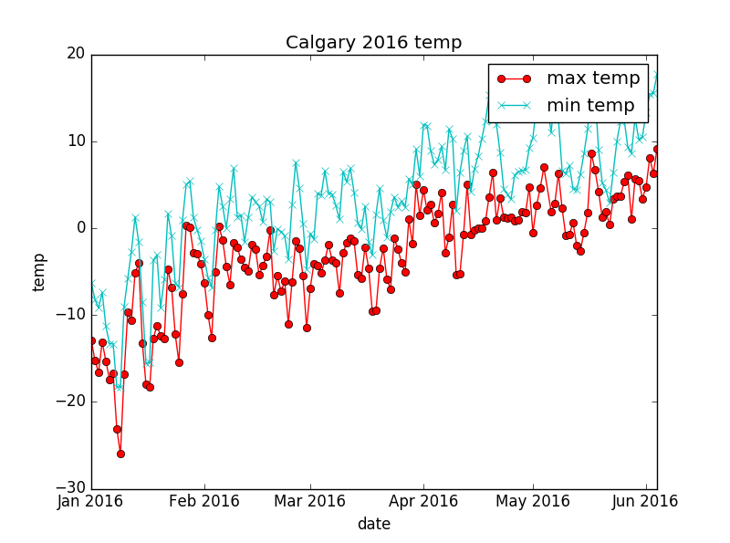

name: GDD class: center, middle, slide-background, yellow # {{ name }} web-based presentation <br><br><br> <br><br><br> Created by .credits[fd6713] .gray[&] .credits[gak488] .gray[&] .credits[ll4734] .gray[&] .credits[oia133] .gray[&] .credits[sug670] .gray[&] .credits[sq5222] .gray[&] .credits[sa7818] --- # Agenda ####1. Introduction ####2. Project structure ####3. Workflow ####4. Makefile ####5. Results --- # Introduction .medium[ This is the web-based presentation of Growing degree-day (GDD) for three cities .gray.italic[St. John's], .gray.italic[Calgary] and .gray.italic[Toronto]. The default data are from .magnet.italic[2014] and .magnet.italic[2015] but it's possible to create results of any year. ] --- # Project structure ```bash GDD |-- csv_data #(Including all the data files) | |-- 50089_2014.csv | |-- 50089_2014.gdd | |-- 50089_2015.csv | `-- 50089_2015.gdd |-- output #(Including all the result or plot files) | `-- plot_images | |-- Calgary_2015.png | |-- Calgary_2016.png | `-- St.johns_2015.png |-- report | |-- GDD.tex | `-- presentation.html |-- src #(Including all the source codes) | |-- testsuite | |-- test_download.py | `-- test_plot.py | |-- download.py | |-- gdd.py | |-- main.py | `-- plot.py |-- .gitignore |-- GDDRequirements.md |-- Makefile `-- ReadME.md ``` --- # Workflow 1. Downloading data from server (automatically) 2. Extracting required columns from data files 3. Calculating GDD 4. Storing calculations into DB or files 5. Creating plot showing annual cycle of min/max daily temperatures 6. Producing reports based on the generated plots 7. Presentation --- # Makefile ```Makefile #CMSC6950 course project vpath %.csv csv_data vpath %.png output vpath %.py ./src SRC=./src DATA=./csv_data OUTPUT=./output .PHONY: All All: report.pdf $(GDDFIGS) $(PLOTFIGS) .PHONY: test test: echo "Test modules" nosetests $(SRC)/testsuite .PHONY: clean clean: rm -rf $(DATA)/* rm -rf $(OUTPUT)/* rm *.pdf ``` <!-- <pre><code class="Makefile"> #CMSC6950 course project SRC=./src </code></pre> --> --- ## Results .center[  ] .gray.small.center[Plot of min/max tempretures] --- .center[ <img class="imgframe" src="Stjohns_2016.png" alt="St. Jonh's 2016"> ] .gray.small.center[Plot of min/max tempretures] --- .center[ <img class="imgframe" src="Toronto_2016.png" alt="Toronto 2016"> ] .gray.small.center[Plot of min/max tempretures] --- .center[  ] .gray.small.center[Plot of min/max tempretures] --- <div class="bokehframe" id="bokehcontent"></div> .gray.small.center[Bokeh plot of min_max tempreture for St. John's] --- <div class="bokehframe" id="bokehcontent2"></div> .gray.small.center[Bokeh plot of gdd and acc_gdd for St. John's] --- class: center, middle, # End For more information and exploring the source code go to the [github](https://github.com/sa7818/GDD) page.